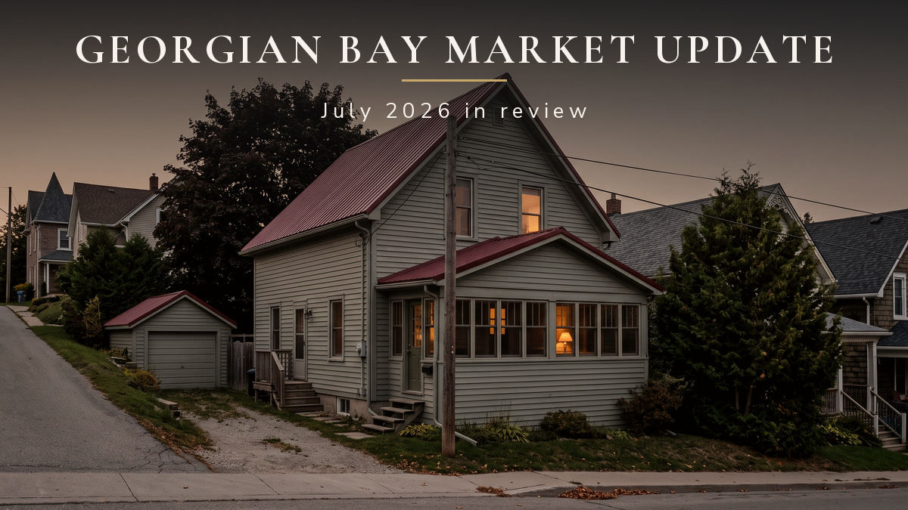

Monthly market update

Simcoe County recorded 756 sales in July 2026 at an average sale price of $728,181, with 7.17 months of inventory. It remains a buyer's market. Sales came in 1.1 percent ahead of July 2025 while new listings fell 13.7 percent, and months of inventory now sits below where it was a year ago.
Key takeaways
- Simcoe County finished July at 7.17 months of inventory, up 10.0 percent from June but down 6.6 percent from July 2025.
- Days on market rose to 41, up from 37 in June and 39 in July 2025.
- The list to sale price ratio held at 96.9 percent, within 0.1 points of last July.
- New listings fell 13.7 percent year over year and active listings fell 5.6 percent, so the inventory build came from slower sales rather than more homes.
- The 8.5 percent year over year drop in the average sale price reflects a shift toward lower price bands in what sold, not an 8.5 percent fall in any one home's value.
Read the county headline on its own and July looks like another step backward. Sales down 10.2 percent from June. Average price down 2.3 percent on the month and 8.5 percent on the year. Months of inventory back up to 7.17.
Then look at the five markets along Georgian Bay, and almost every one of them moved the other way.
The real read
The month over month numbers and the year over year numbers tell opposite stories, and the year over year set is the more reliable of the two.
Against July 2025, Simcoe County sold slightly more homes (756 against 748) with fewer new listings (2,316 against 2,683) and less standing inventory (5,424 against 5,743). Supply shrank, demand held, and months of inventory came down 6.6 percent. That is a market tightening over twelve months, not loosening.
The rise in months of inventory this month is arithmetic. Active listings actually fell 1.1 percent from June. The ratio moved because sales fell faster than inventory did, which is a July slowdown in a market where families take holidays, not a supply problem.
The list to sale price ratio is the number that keeps this honest. At 96.9 percent, buyers paid within roughly three points of asking, the same as they did last July. Sellers are not giving homes away. They are waiting longer to find the buyer.
The supply story
New listings fell 15.5 percent from June and 13.7 percent from July 2025. That is the largest single move in the county data, and it matters more than the price line.
Sellers are choosing not to come to market. Some are waiting for rates, some for spring, some for a neighbour's sale to set a number. Whatever the reason, the pipeline feeding next quarter's inventory is thinner than it was a year ago while sales have held. Continue that for two more months and the buyer's market arithmetic starts working against buyers.
The bigger picture
The same pattern is running across the corridor. The Toronto Regional Real Estate Board reported on August 6, 2026 that Greater Toronto Area sales were nearly flat in July at 5,995 while new listings fell 17.8 percent year over year, with an average selling price of $1,003,956. Board president Daniel Steinfeld put it plainly: with sales accounting for a larger share of listings, buyers may find there is less room to negotiate moving forward.
Simcoe County is running the same play with a thirteen percent listings decline instead of eighteen. Buyers who have been waiting for the market to get easier are watching the supply side quietly remove that option.
Where the market moved, community by community
| Market | Sales | Average price | Months of inventory |
|---|---|---|---|
| Midland and Penetanguishene | 40 up 33.3% | $579,468 down 7.8% | 7.90 down 24.0% |
| Tay Township and Tiny Township | 57 up 16.3% | $684,002 up 2.2% | 9.16 down 16.7% |
| Wasaga Beach | 42 down 54.8% | $598,200 down 9.5% | 11.93 up 124.6% |
| Collingwood and The Blue Mountains | 85 up 11.8% | $930,449 up 5.7% | 8.71 down 14.2% |
| Orillia | 51 down 19.0% | $594,577 down 0.6% | 5.39 up 20.5% |
Midland and Penetanguishene
The strongest sales move in the region. 40 sales, up 33.3 percent from June, with months of inventory down 24.0 percent to 7.90 on essentially flat supply. More buyers wrote offers and they cleared existing inventory rather than new listings.
The counterweight is time. Average days on market rose to 45 from 25, an 80 percent jump. More homes sold, and they took considerably longer to get there. Homes that came out priced and prepared moved at 96.9 percent of asking, slightly better than June.
Tay Township and Tiny Township
The most balanced month in the region. Sales up 16.3 percent to 57, average price up 2.2 percent to $684,002, days on market down to 41, and months of inventory down 16.7 percent to 9.16. New listings fell 21.4 percent on top of that.
Rising sales, rising prices and falling inventory in the same month is the cleanest signal in the July data. Waterfront buyers who spent spring watching came back in July.
Wasaga Beach
The sharpest reversal of the month. Sales fell 54.8 percent to 42 and months of inventory more than doubled to 11.93 on inventory that barely moved. This was demand stepping back, not supply arriving.
One month is a small sample, and June was an unusually strong month in Wasaga Beach. The honest read is that this is a data point to watch through August rather than a trend to price against today. Homes that did sell still landed at 96.7 percent of asking in 41 days.
Collingwood and The Blue Mountains
The upper end of the region moved. Sales up 11.8 percent to 85, average price up 5.7 percent to $930,449, and new listings down 30.3 percent, the largest supply pullback in the region. Months of inventory improved to 8.71.
Days on market rose to 54, the longest in the region. Buyers at this price point take their time, compare properly, and then commit. Note that this market spans Simcoe County and Grey County, so it is not counted inside the county totals above.
Orillia
The steadiest price line in the region. Average price moved 0.6 percent, essentially flat, and the list to sale price ratio held at 97.4 percent, the strongest of the five. Sales slowed 19.0 percent and days on market rose to 46. At 5.39 months of inventory, Orillia is the tightest of these markets and the closest to balanced.
A buyer's market does not mean sellers lose
Every market in this report sold at between 96 and 98 percent of asking price. That is the whole argument. A buyer's market changes how long a sale takes and how carefully a home has to be positioned. It does not change what a properly prepared home is worth.
What separated the markets that improved from the markets that stalled in July was supply discipline. Tay Township, Tiny Township, Collingwood and The Blue Mountains all saw new listings fall by more than 20 percent while sales rose. Where sellers came out with a plan instead of a hope, the market absorbed the inventory.
Worth noting for anyone selling above $900,000 around Georgian Bay: Collingwood and The Blue Mountains posted rising sales and rising prices in the same month the county middle slowed. Demand at the top of this market did not go quiet in July.
What this means for you
Buying: you still have selection and negotiating room, and the year over year supply numbers say that window is narrowing rather than widening. If you have been waiting for a better entry point, the data no longer supports waiting for one.
Selling: price to the last 30 days in your specific community, not to the county average and not to last spring. Midland at $579,468 and Collingwood at $930,449 are not the same market and should never be priced from the same number. Days on market are rising almost everywhere, so preparation before listing is what decides the outcome.
If you are weighing a move around Midland, Penetanguishene, Tiny Township, Tay Township or Wasaga Beach this fall, this market is workable. It rewards a plan and punishes a guess.
The month at a glance
| Metric | July 2026 | vs June | vs July 2025 |
|---|---|---|---|
| Sales | 756 | down 10.2% | up 1.1% |
| Average Sale Price | $728,181 | down 2.3% | down 8.5% |
| New Listings | 2,316 | down 15.5% | down 13.7% |
| Active Listings | 5,424 | down 1.1% | down 5.6% |
| Months of Inventory | 7.17 | up 10.0% | down 6.6% |
| Days on Market | 41 | up 10.8% | up 5.1% |
| List to Sale Price Ratio | 96.9% | down 0.2 points | down 0.1 points |
Common questions about this market
Is it a buyer's market in Simcoe County right now?
Yes. Simcoe County finished July 2026 at 7.17 months of inventory. Anything above six months is generally considered a buyer's market. That figure is up 10.0 percent from June 2026 but down 6.6 percent from July 2025, so buyers have selection without the supply glut of a year ago.
How long are homes taking to sell in Simcoe County?
Homes in Simcoe County averaged 41 days on market in July 2026, up from 37 days in June 2026 and 39 days in July 2025. Around Georgian Bay the spread is wide: Tay Township and Tiny Township averaged 41 days while Collingwood and The Blue Mountains averaged 54.
Are home prices going up or down in Georgian Bay?
The Simcoe County average sale price was $728,181 in July 2026, down 2.3 percent from June and 8.5 percent from July 2025. That average tracks what sold rather than what any one home is worth. The list to sale price ratio held at 96.9 percent, within 0.1 points of last July, and Tay Township and Tiny Township averaged $684,002, up 2.2 percent on the month.
What should sellers in Midland or Penetanguishene do in this market?
Price to the last 30 days and prepare before listing. Midland and Penetanguishene recorded 40 sales in July 2026, up 33.3 percent from June, and months of inventory fell 24.0 percent to 7.90. Homes still sold at 96.9 percent of asking, but average days on market rose to 45, so preparation decides which listings move.
Thinking about a move in Georgian Bay this fall? Send me a message and we can talk through exactly what these numbers mean for your street, your timeline, and your specific home. If you have a home to sell, I can also put together a free, no-obligation valuation.
Keep reading
- Selling your home in Midland, Ontario
- The Price Drop Is Not the Story This Week. Forty-Seven Days Is.
- Buying waterfront on Georgian Bay
By Jonathan Wallace, REALTOR®, Faris Team Real Estate, Brokerage. 705-433-2525. Figures are aggregated board statistics for Simcoe County and the communities named and are approximate and subject to revision. Community level figures cover different geographies than the county totals and do not sum to them. Ask for current data for your specific area and property type before making a decision.